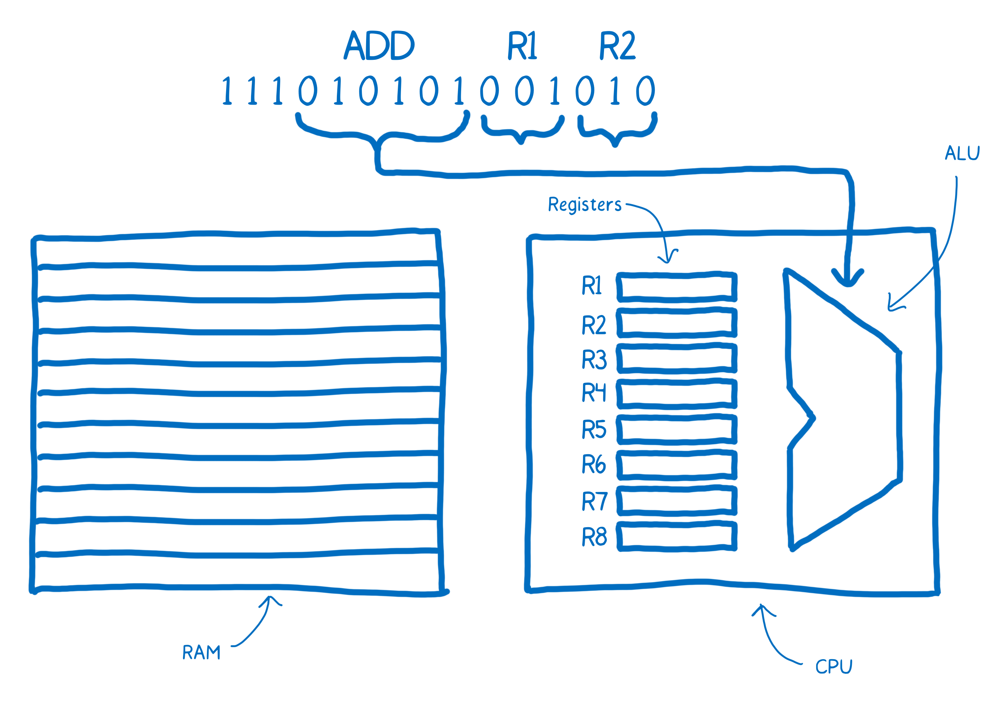

WebAssembly
Binary format for the web
Presented by Matjaž Drolc / @MatjazDrolc / github.com/drola
WebAssembly is a format suitable for compilation to the web.
How does processor work?
Source: https://hacks.mozilla.org/2017/02/a-crash-course-in-assembly/
Demo
Usage scenarios
- Write faster versions of specific algorithms
- Use existing libraries in browser
- Reuse algorithms from the server-side
- Distribute whole application as WebAssembly
Optimizing an algorithm in a web application
Example
/demos/primesFinding prime numbers: Sieve of Eratosthenes algorithm

Installing Emscripten
# Install dependencies
sudo apt-get install git cmake build-essential python2.7 nodejs default-jre
wget https://s3.amazonaws.com/mozilla-games/emscripten/releases/emsdk-portable.tar.gz
tar -zxvf emsdk-portable.tar.gz
cd ./emsdk-portable
./emsdk update
./emsdk install sdk-incoming-64bit #If you are getting "collect2: error: ld returned 1 exit status" error, try running ./emsdk install -j1 sdk-incoming-64bit
./emsdk activate sdk-incoming-64bit
cd emcscripten/incoming
./embuilder.py build binaryen
cd ../..
source ./emsdk_env.sh
JS <-> C++
EMSCRIPTEN_BINDINGS(my_module) {
emscripten::function("findBiggestPrimeLessThan",
&findBiggestPrimeLessThan);
myWasmLibrary().then(function(myWasmLibrary) {
//WASM module has been loaded and initialized.
var result = myWasmLibrary.findBiggestPrimeLessThan(1000);
});
https://kripken.github.io/emscripten-site/docs/porting/connecting_cpp_and_javascript/embind.html
Compiling
emcc -O3 --llvm-lto 3 `#Highest optimization level` \
-s ALLOW_MEMORY_GROWTH=1 `#Allow memory growth from default 16MB if needed` \
-s USE_CLOSURE_COMPILER=1 `#Use closure compiler to reduce size of .js file` \
-s EXPORTED_RUNTIME_METHODS=[] `#Don't export any runtime methods` \
-s WASM=1 `#Generate WebAssembly` \
-s MODULARIZE=1 `#Wrap in module` \
-s NO_EXIT_RUNTIME=1 `#Don't destroy runtime after main() finishes` \
-s EXPORT_NAME="'myWasmLibrary'" `#Export as 'myWasmLibrary'` \
-std=c++11 `#Use C++11 standard` \
--bind `#Generate bindings` \
-o wasm.js `#Output to wasm.js` \
findBiggestPrimeLessThan.cpp #Input file(s)
WebDSP
video editor demo
http://tiny.cc/webdsp
WebAssembly Explorer
https://mbebenita.github.io/WasmExplorer/Security
- Limited set of instructions
- More limited control flow than in x86
- Can only call existing APIs available in JavaScript
- Linear memory and program code are separated
Example: computer vision with OpenCV
/demos/faceBrowser support
| No | In development | Yes |
|---|---|---|
|
|
|
Problems
- github.com/kripken/emscripten/.../settings.js
- Efficient transfer of data between C++ and JS
- Manual memory management
Opportunity to learn new languages
- C++ has been modernized
- Learning C++ gives you power
- Rust, Go compiler in development
WebAssembly roadmap
- Improved tooling
- Threads
- SIMD instructions
(single instruction, multiple data)
This is just the beginning
- It will get faster
- More languages to come
- Wide browser support
Invitation for everyone!
Hack, write documentation, expand boundaries.
Muchas gracias.
Slides and links:
https://drola.si/webassembly